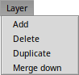
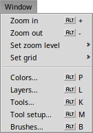

The menus
Most menus and their items are standard or don't need much explanation. Also, a short help text appears in the status bar, if you hover over an item. Let's just move quickly through them and concentrate on the not immediately obvious ones:
 |
ArtPaintEverything related to the application itself: |
 |
FileAll the file handling: |
 |
Editthe last action (the number of reversible actions can be adjusted in the settings). You can or the selection of the or from their submenus. If there's no selection, the whole layer gets cut or copied. The copied selection can then be or . will remove all pixels from the selection (or the whole layer if there's no selection). You can also press DEL. As with cut and copy, you can , , and the selection of the or from their submenus. If there's no selection, the whole layer gets transformed. , and pop up a window to enter angle, x/y coordinates or dimensions manually, or by rotating/moving/resizing it all directly on the canvas. |
SelectionYou can select of the layer, or only pixels. You can un-select everything with or the selection. Selections can also and by one pixel. You can , and the selection. Those work just like their counterparts under , but are applied to the selection itself, not the selected pixels of the image. With the ant-line demarcating the selection can be turned off/on, in case you need an infestation-free view of your work of art. | |
|  |
Layercreates a new layer. You can , or (i.e. merge with one below) the currently active layer. |
 |
Canvaswill rotate the whole canvas clockwise/counter-clockwise. and open a panel to enter values manually, but you can also manipulate the canvas directly in the window. Hold SHIFT to lock the aspect ratio. |
|  |
Windowor between 25% and 800%. lets you activate an invisible grid of 2x2, 4x4 or 8x8 pixels. Last is a list of the special panels which are described under The other windows. It's a good idea to memorize the shortcuts to them. |
 |
Add-onsHere you'll find all available add-ons, see The add-ons. |
Back: The main window Next: The settings